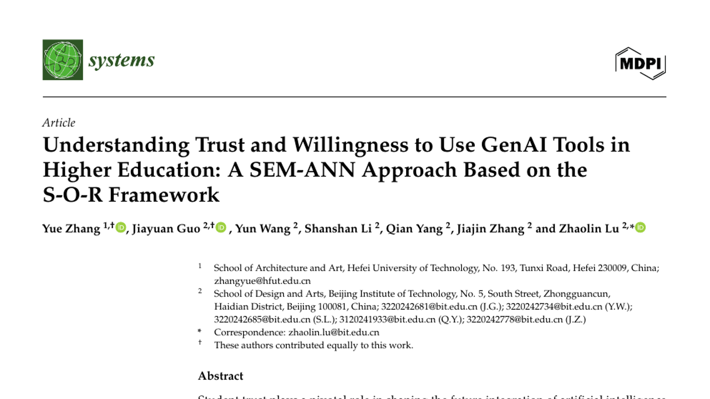
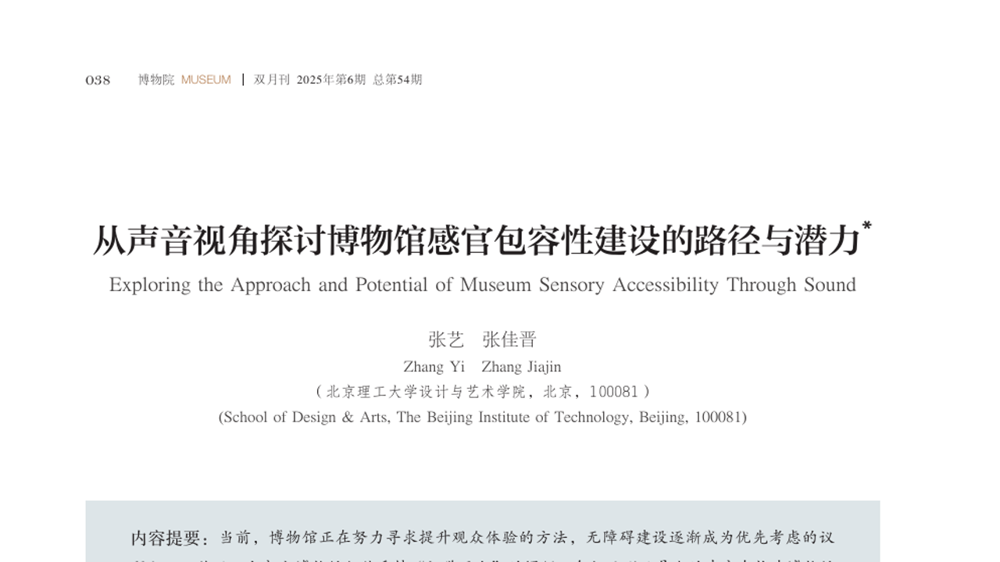

你好，我是张佳晋
求职方向：AI产品 / 交互设计 / 项目管理。
熟练使用GPT/Codex、Claude、Zcode等AI工具，掌握Vibe Coding开发方式，具备从需求分析、交互设计、Agent工作流设计与工具调用等，到AI辅助编程、代码理解、功能测试及部署的全流程实践能力；熟练使用Figma、Axure、Blender等设计工具，可独立完成B/C端产品交互设计与原型开发；具备良好的团队协作与沟通能力。
岗位描述
- 参与公司大模型与AIGC相关的平台型和用户型项目，包括但不限于语言模型、图像生成、语音合成、视频生成等方向；
- 负责AI产品的需求分析、功能设计、产品规划和迭代优化工作；
- 协助优化公司内部AI类平台或效能工具，提升用户体验和工作效率；与业务方高效沟通、理解和回应业务需求；
- 根据实际情况参与其他与大模型和AIGC相关的产品工作；
- 具体工作内容将根据实际情况和个人特长进行分配和调整。
教育背景
2020.9–2024.6
专业排名：3/120；绩点（GPA）：3.95/5
主修课程：交互设计（95）、用户研究（93）、Agent开发（90）、移动界面设计（95）、视听语言（96）、品牌管理与设计（96）
实习经历
2026.3–2026.10
项目一：「小罗盘」｜ACG资源运营AI助手（百度内部⭐「集市π队」NO.1）
产品类型：AI Agent/B端产品
项目背景：资源运营依赖跨系统查数、人工分析与流程追踪，业务指标与专业口径复杂、通用AI输出不稳定；通过私域部署面向OMC场景的AI Agent，将“人找系统”升级为“用户提出需求，AI调用工具完成任务”。全程参与V1.0→V4.0迭代，负责交互原型制作、参与PRD撰写与上线验收。
V1.0-MVP实现：私域部署资源运营AI助手，以办公对话机器人（群聊/单聊）+Web端Agent为入口；以「业务规则结构化（口径文档→领域指令+确定性代码）+RAG检索」双通道注入专业知识，LLM做意图路由与参数生成；同时搭建后端使用数据看板，支持用户使用情况数据的可视化展示；
V2.0-Skills生态：参与建设覆盖6大业务领域的Skills体系，沉淀30+系统Skill与56项业务Skill；确立「数据接入→校验→结构化输出」skill标准流程以及“生成→评估→迭代优化→发布”的质量管理机制与自动化回归，通过API调用（HTTP接口）与浏览器操作共同执行保障流程稳定；
V3.0-用户增长运营：策划落地「小罗盘探索月」、「随心记·小罗盘功能沉淀」、中秋国庆「值班挑战赛」活动以及日常核心运营工作，推动用户规模由100余人增长至300余人，核心组渗透率85%+；
V4.0-专家能力深入建设：推动GPU运营专家&Capex专家的能力建设与领域知识库建设。落地「领域指令+工具集+知识库」建设范式，引入数据本体服务（EAR实体-属性-关系建模）统一业务数据口径，提升了复杂业务问题的理解与执行能力，形成可溯源的专家矩阵。实现交付查询提效30倍（15min→30s）、VMI（供应商管理库存）补货提效10倍，并推动结算流程的AI驱动。后续引入主代理和子代理的AI专家团队概念深化建设。
项目二：GPU 全生命周期数据底座平台（B 端 · 数据/平台产品）
【项目背景】：GPU 单台价值百万级，从到货、交付、售卖到计费回收，每折损一小时都是资金占用与折旧损耗；但“折损有多少、卡在哪里、何时发生”当时无人能答。平台按三阶段建设，逐一回答这三个问题：
【阶段一：售卖面积图（4 月上线）】——度量：看得见总账：将全生命周期各环节折算为统一“售卖面积”口径（计费售卖台时 ÷ 到货计费台时），上线全链路折算总览；首次以单一数字回答“资源转得快不快”，为管理层决策折损优化方向提供统一依据
【阶段二 · 多级售卖指标（5–6 月上线）】——归因：找得到卡点：构建三级下钻体系——一级售卖面积看总账，二级四段转化率（线上库存→可售→售卖→计费售卖）定位漏损阶段，三级环节折损占比定位卡点并对应责任团队；问题定位从全链路人工排查变为逐级下钻直达卡点
【阶段三 · 资源巡检平台（5–7 月上线）】——监控：盯得住异常：将8大巡检场景产品化为4个子模块，支持任意时刻资源状态切片（可按SN下钻）与单机全程回溯，资源状态分钟级感知；人工追查变实时预警，异常从“事后复盘发现”变“分钟级暴露”
项目三：IDG（数据中心）Capex（资本性支出）线上化项目
产品类型：平台产品/B端产品
【业务背景】：IDC资源资本性支出（Capex）管理长期依赖人工编制数据与汇总进行监控，业务与财务数据分散，存在统计效率低、指标不统一等问题。
【执行监控体系】：参与设计Capex看板（监控/概览/差异分析），将原有人工周报升级为覆盖预算概览、执行监控及差异分析的线上管理体系。梳理预算、执行、到货等核心指标口径，建立机型自动归类、业务线分摊成本与数据质量校验机制；联动内部度厂版、运营（OMC）、采购（P2P）多系统对齐口径，推动公有云业务（eg：百度智能云的云服务器产品等）Capex线上化；
【AI工程化】：参与落地「skill快速实现+工程版长线建设」双轨方案。在正式版开发期间，以AI skill定期生成执行监控页面并发布至业务平台满足阶段性业务需求；参与AI智能分析部分设计：固定skill模板+动态数据规则输出分析结论和建议，让结论可复现、可审计；
【结果与价值】：上线概览视图、执行监控看板、AI智能分析功能，推动Q3 OKR完成率约55%，实现人工更新到在线更新，口径资产文档化沉淀。
项目四：“音秘AudioMyst”｜AI播客创作产品
产品类型：AI Agent/C端产品
【项目背景】：调研播客市场与AIGC创作趋势，通过访谈、竞品分析，挖掘传统播客制作门槛高、周期长等痛点，明确产品定位与MVP功能。
【大模型交互设计】：基于千帆AI大模型（文心系列+TTS）设计「文本整理-角色对话生成-语音合成」AIGC生成链路，参与Prompt策略与生成状态交互设计，将模型调用封装为可编辑、可干预、可恢复的体验（流式生成/中间态编辑/分段重生成/异步音频合成），完成全流程界面设计与高保真原型。
【测试与迭代】：与开发工程师设计走查+可用性测试，推动产品上线：audiomyst.baidu.com
2023.11–2024.3
参与企业级AI搜索与流程管理平台的Web端会议记录场景的交互设计；优化多步骤流程下的交互清晰度与操作效率，降低用户理解成本；
交互设计：基于业务需求与用户任务，梳理信息架构与复杂业务流程，输出用户路径、流程图及低/高保真原型（Figma）；
设计测试：与PM、前端工程师FE协作，参与研发提测后的设计走查与迭代优化，推动设计方案上线。
2024.6–2024.8
产品生命周期管理：负责奇瑞汽车公司环视摄像头生产，与研发部、生产部等配合成功交付2W+摄像头；
项目维护：负责吉利、极氪10余个摄像头项目的管理系统进度预警、状态更新与节点跟踪，保障多项目并行下的信息一致性；
与研发、生产等多部门协作跟进项目执行状态，负责项目交付相关数据与文档的结构化整理与系统上传，支撑数据统计与交付可追溯性。
AI产品Vibe coding&科研经历
CHI会议全称：ACM CHI Conference on Human Factors in Computing Systems
发表信息：CHI会议｜CCF-A类
职责：Vibe coding独立全栈开发/第一作者/需求调研/实验/程序开发/论文撰写。
全栈开发：使用React/TypeScript独立完成Web产品，通过异步调用API千问文本与图像模型实现作品分析、AI反馈、DIY白板等核心MVP；
AI交互与验证：围绕设计作品评价，通过访谈设计“意图锚定—反馈解构—方案比较—采纳判断—轨迹回看”完整链路，并通过6人走查与56人对照实验迭代字段引导、上下文选择及AI总结编辑。
[PDF]发表信息：CHI会议｜CCF-A类
职责：产品经理/第一作者。
用户需求：聚焦GLP-1减重女性在副作用、身体污名、隐私顾虑和经验支持方面的需求，梳理关键场景、现有平台缺口与产品价值；
双AI设计与系统实现：群聊AI负责话题引导与经验聚类，私聊AI提供更个性支持；小程序端实现匿名群聊、私人助手、隐私设置与经验卡片；后端基于Python，通过OpenAI兼容接口调用GPT-5.5大模型，为群聊、私聊配置独立Prompt，并完成隐私处理、意图与风险识别功能。
测试与迭代：构建双AI协同的测试方案，开展24人对照实验。结合群聊行为日志、访谈与量表来评估AI介入效果，支撑Agent交互策略优化。
[PDF]
期刊：Systems｜MDPI｜2025｜JCR二区
摘要：本研究考察 AI 促进条件（FCs）、绩效期望（PE）和任务类型如何影响学生对 AI 的系统类信任（AST）与类人信任（AHT），并进一步检验类人信任在持续使用 AI 辅助学习意愿中的中介作用。研究基于 466 名中国大学生的有效数据，结合偏最小二乘结构方程模型（PLS-SEM）与人工神经网络（ANN），检验各变量间的假设关系、中介机制及影响因素的相对重要性。
[PDF]
期刊：《博物院》｜AMI入库
内容提要：当前，博物馆正在努力寻求提升观众体验的方法，无障碍建设逐渐成为优先考虑的议题之一。然而，大部分博物馆仍然秉持“视觉至上”的惯例，忽视无形且易逝的声音在构建博物馆包容性体验方面所能发挥的潜能。本文尝试从声音视角探讨博物馆感官包容性建设的路径与潜力，首先梳理与包容性设计和残障分类有关的理念，接着分析博物馆的包容性建设现状，并阐明引入声音包容性这一概念的必要性。然后从单感官声音体验和多感官体验两个层次剖析当前博物馆包容性建设中声音的角色和策略，并分别从规划、技术、学术和管理四个角度提出可行的博物馆声音包容性策略。
[PDF]竞赛&荣誉称号
- 第十二届未来设计师·NCDA数字媒体艺术大赛国家级一等奖
- 第十一届未来设计师·NCDA数字媒体艺术大赛省级三等奖
- 2024–2025连续2年获学业二等奖学金
- 2020–2022连续两年荣获“优秀学生”称号
- 四川省优秀毕业生荣誉称号
- 校级“优秀毕业设计”称号（1/3）